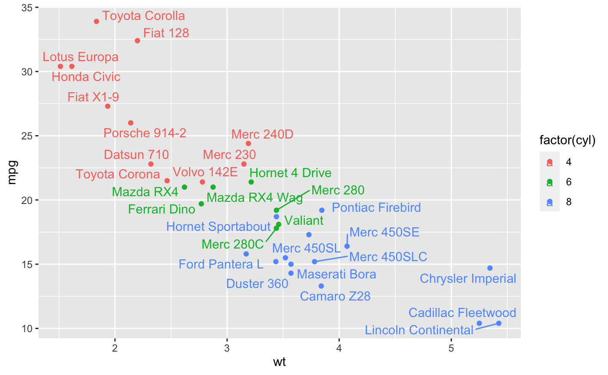

geom_text_repel adds text directly to the plot.
geom_label_repel draws a rectangle underneath the text, making it
easier to read. The text labels repel away from each other and away from
the data points.
geom_label_repel( mapping = NULL, data = NULL, stat = "identity", position = "identity", parse = FALSE, ..., box.padding = 0.25, label.padding = 0.25, point.padding = 1e-06, label.r = 0.15, label.size = 0.25, min.segment.length = 0.5, arrow = NULL, force = 1, force_pull = 1, max.time = 0.5, max.iter = 10000, max.overlaps = getOption("ggrepel.max.overlaps", default = 10), nudge_x = 0, nudge_y = 0, xlim = c(NA, NA), ylim = c(NA, NA), na.rm = FALSE, show.legend = NA, direction = c("both", "y", "x"), seed = NA, verbose = FALSE, inherit.aes = TRUE ) geom_text_repel( mapping = NULL, data = NULL, stat = "identity", position = "identity", parse = FALSE, ..., box.padding = 0.25, point.padding = 1e-06, min.segment.length = 0.5, arrow = NULL, force = 1, force_pull = 1, max.time = 0.5, max.iter = 10000, max.overlaps = getOption("ggrepel.max.overlaps", default = 10), nudge_x = 0, nudge_y = 0, xlim = c(NA, NA), ylim = c(NA, NA), na.rm = FALSE, show.legend = NA, direction = c("both", "y", "x"), seed = NA, verbose = FALSE, inherit.aes = TRUE )
Arguments
| mapping | Set of aesthetic mappings created by |
|---|---|
| data | A data frame. If specified, overrides the default data frame defined at the top level of the plot. |
| stat | The statistical transformation to use on the data for this layer, as a string. |
| position | Position adjustment, either as a string, or the result of a call to a position adjustment function. |
| parse | If TRUE, the labels will be parsed into expressions and displayed as described in ?plotmath |
| ... | other arguments passed on to
|
| box.padding | Amount of padding around bounding box, as unit or number.
Defaults to 0.25. (Default unit is lines, but other units can be specified
by passing |
| label.padding | Amount of padding around label, as unit or number.
Defaults to 0.25. (Default unit is lines, but other units can be specified
by passing |
| point.padding | Amount of padding around labeled point, as unit or
number. Defaults to 0. (Default unit is lines, but other units can be
specified by passing |
| label.r | Radius of rounded corners, as unit or number. Defaults
to 0.15. (Default unit is lines, but other units can be specified by
passing |
| label.size | Size of label border, in mm. |
| min.segment.length | Skip drawing segments shorter than this, as unit or
number. Defaults to 0.5. (Default unit is lines, but other units can be
specified by passing |
| arrow | specification for arrow heads, as created by |
| force | Force of repulsion between overlapping text labels. Defaults to 1. |
| force_pull | Force of attraction between a text label and its corresponding data point. Defaults to 1. |
| max.time | Maximum number of seconds to try to resolve overlaps. Defaults to 0.5. |
| max.iter | Maximum number of iterations to try to resolve overlaps. Defaults to 10000. |
| max.overlaps | Exclude text labels that overlap too many things. Defaults to 10. |
| nudge_x, nudge_y | Horizontal and vertical adjustments to nudge the starting position of each text label. |
| xlim, ylim | Limits for the x and y axes. Text labels will be constrained to these limits. By default, text labels are constrained to the entire plot area. |
| na.rm | If |
| show.legend | logical. Should this layer be included in the legends?
|
| direction | "both", "x", or "y" -- direction in which to adjust position of labels |
| seed | Random seed passed to |
| verbose | If |
| inherit.aes | If |
Details
These geoms are based on geom_text and
geom_label. See the documentation for those
functions for more details. Differences from those functions are noted
here.
Text labels have height and width, but they are physical units, not data units. The amount of space they occupy on that plot is not constant in data units: when you resize a plot, labels stay the same size, but the size of the axes changes. The text labels are repositioned after resizing a plot.
geom_label_repel
Currently geom_label_repel does not support the rot argument
and is considerably slower than geom_text_repel. The fill
aesthetic controls the background colour of the label.
Alignment with hjust or vjust
The arguments hjust and vjust are supported, but they only
control the initial positioning, so repulsive forces may disrupt alignment.
Alignment with hjust will be preserved if labels only move up and down
by using direction="y". For vjust, use direction="x".
Examples
p <- ggplot(mtcars, aes(wt, mpg, label = rownames(mtcars), colour = factor(cyl))) + geom_point() # Avoid overlaps by repelling text labels p + geom_text_repel()# Labels with background p + geom_label_repel()#> Warning: ggrepel: 1 unlabeled data points (too many overlaps). Consider increasing max.overlapsif (FALSE) { p + geom_text_repel(family = "Times New Roman", box.padding = 0.5) # Add aesthetic mappings p + geom_text_repel(aes(alpha=wt, size=mpg)) p + geom_label_repel(aes(fill=factor(cyl)), colour="white", segment.colour="black") # Draw all line segments p + geom_text_repel(min.segment.length = 0) # Omit short line segments (default behavior) p + geom_text_repel(min.segment.length = 0.5) # Omit all line segments p + geom_text_repel(segment.colour = NA) # Repel just the labels and totally ignore the data points p + geom_text_repel(point.padding = NA) # Hide some of the labels, but repel from all data points mtcars$label <- rownames(mtcars) mtcars$label[1:15] <- "" p + geom_text_repel(data = mtcars, aes(wt, mpg, label = label)) # Nudge the starting positions p + geom_text_repel(nudge_x = ifelse(mtcars$cyl == 6, 1, 0), nudge_y = ifelse(mtcars$cyl == 6, 8, 0)) # Change the text size p + geom_text_repel(aes(size = wt)) # Scale height of text, rather than sqrt(height) p + geom_text_repel(aes(size = wt)) + scale_radius(range = c(3,6)) # You can display expressions by setting parse = TRUE. The # details of the display are described in ?plotmath, but note that # geom_text_repel uses strings, not expressions. p + geom_text_repel(aes(label = paste(wt, "^(", cyl, ")", sep = "")), parse = TRUE) # Add a text annotation p + geom_text_repel() + annotate( "text", label = "plot mpg vs. wt", x = 2, y = 15, size = 8, colour = "red" ) # Add arrows p + geom_point(colour = "red") + geom_text_repel( arrow = arrow(length = unit(0.02, "npc")), box.padding = 1 ) }